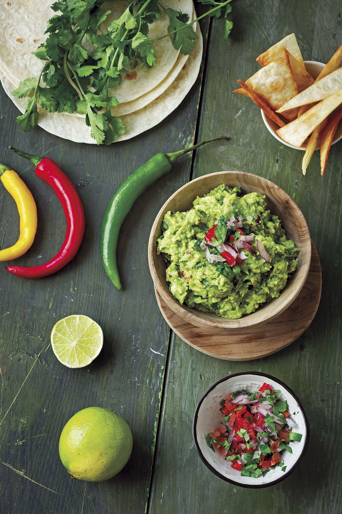

LAS MEJORES RECETAS DE LA TEMPORADA
Te dejamos un listado de 30 platos fáciles para cenas:
- Chowder de pollo y maíz
- Enchiladas de ternera
- Pollo al Bourbon
- Sopa de lasaña con dumplings de ricota
- Ensalada Cheeseburger
- Pasta cabello de ángel
- Albóndigas de jengibre con brócoli y sésamo
- Huevos rancheros
- Pasta al pesto con gambas
- Coca de verduras
- Tartar de salmón con ensalada
- Tagliolini con huevo escalfado y trufa
- Aguacate con semillas de mostaza
- Sepia con mayonesa de wasabi
- Ensalada de bulgur y aguacate
- Pizza de alcachofas, pollo y rúcula
- Tacos de langostinos con salsa de yogur
- Ensalada de dorada y mango
- Guacamole, pico de gallo y totopos
- Almejas a la marinera
- Rollitos de berenjena
- Patatas al horno con brócoli
- Mejillones al vapor con vinagreta
- Tortilla de patatas con tomate y calabacín
- Pasta con crema de aguacate
- Albóndigas veganas con salsa de tomate
- Ensalada de cacahuetes y fideos soba
- Ceviche de bacalao
CONSEJOS DE NUESTROS CHEFS
Pasión y disciplina
La pasión y motivación permite seguir investigando y perfeccionando en cada momento. Hay que practicar para saber cómo tratar la materia prima y persistir.
Creatividad
La creatividad se ganaprobando nuevos sabores, dándole un estilo personal, sin dejar de perder la identidad ni la esencia original
Mejorar conocimientos
Aprender sobre nuevas tendencias, sobre la gastronomía actual, mostrando respeto con las culturas y sabores de tu país y del resto del mundo.
Innovación
Salir de la zona de confort. Hay que tener la habilidad de experimentar con la misma receta y reinventarla.
Sentidos desarrollados
Para ser un chef profesional hay que ser capaz de sentir el aroma de los platos y distinguir cualquier sabor. La experiencia permite desarrollar estos sentidos y mejorar para diseñar nuevas creaciones.
Gestión del tiempo
Es muy importante saber gestionar el tiempo en una cocina. No es únicamente necesario para las cocciones sino también para destacar tu talento y profesionalidad como cocinero.
TE ENSEÑAMOS CÓMO CATAR VINOS
La temperatura de servicio recomendado de los vinos es la siguiente:
Blancos jóvenes y ligeros: 6-8ºC
Rosados, Blancos con cuerpo: 8-10 ºC
Dulces naturales, Tintos joven y ligero: 14-16ºC
Tinto crianza y reserva: 116-18ºC
En la fase visual inclinamos la copa, vemos su nitidez, intensidad, lágrima y efervescencia para saber la edad del vino.
En la fase olfativa apreciamos aromas primarios (de la uva o cepa), aromas secundarios (de la fermentación), lática y aromas terciarios (crianza del vino).
En la fase gustativa damos un pequeño sorbo. Una expresión que se usa es que cuando un vino contiene una armonía entre los sabores, diremos que es redondo.
La fase retronasal consiste en una vez se traga el vino, se expulsa el aire por la nariz, en esta fase nos debemos de fijar en el ataque, evolución, impresión final y el postgusto del vino que nos deje en la boca.
TU GUSTO TAMBIÉN SE AJUSTA A TUS NECESIDADES

Recetas sin TACC
- Salsa Alfredo de aguacate con fideos de calabacín
- Pechuga de pollo con costra de nuez
- “Papas fritas” de ejotes
- Pastel de Pollo y Papas
- Pasta con verduras salteadas y pollo
Recetas sin lactosa
- Espaguetis Carbonara
- Pollo al curry con leche de coco
- Pollo al chilindron guisado
- Hamburguesa de tofu y garbanzos
- Carpaccio de calabacín
Recetas sin fructosa
- Omelette de champiñón
- Ensalada de pepino y yogur
- Bistec de ternera a la brasa con champiñones
- Bacalao con crujiente de puerro
- Boniato asado relleno de quinoa y queso
Recetas dulces sin huevo
- Galletas de avena con chocolate y plátano
- Panna Cotta de chocolate con leche
- Crumble de manzanas, lichis y moras
- Mousse vegana de coco y frambuesas
- Palmeritas integrales de queso crema y sésamo
Recetas veganas
- Curry de garbanzos con mango
- Filetes de seitán en salsa de pimienta
- Crepes rellenos de setas y pipas de calabaza
- Macarrones con coliflor y salsa pesto
- Albóndigas de lentejas en salsa miso
¡LAS FIESTAS CON OUR KITCHEN SON DE OTRO SABOR!
En estas festividades, en Our Kitchen, queremos que cada familia se sienta en casa. Te invitamos a unirte a nosotros en esta temporada especial, donde la magia de la cocina gourmet se mezcla con la calidez de compartir momentos con seres queridos. En un ambiente elegante y acogedor, nuestras delicias culinarias se convierten en un lazo que une a las familias. Celebremos juntos, celebremos en familia. En Our Kitchen, creamos recuerdos que perduran más allá de la última comida.
¡Esta Navidad y Año Nuevo, haz de Our Kitchen tu destino para crear momentos inolvidables en compañía de tus seres queridos!